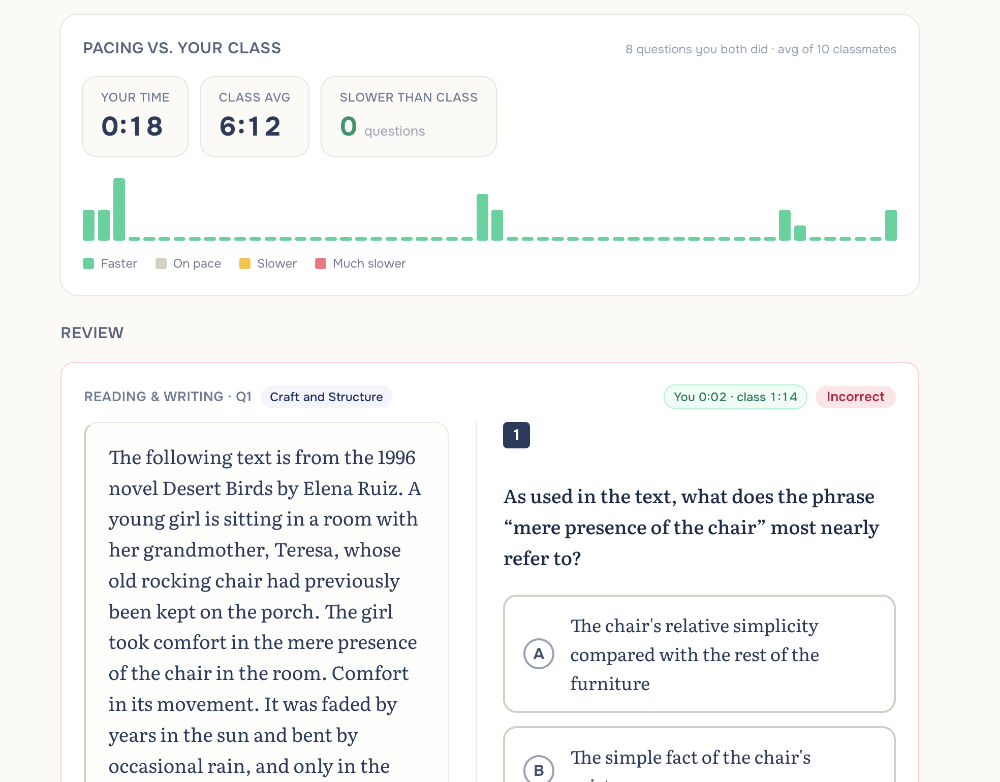
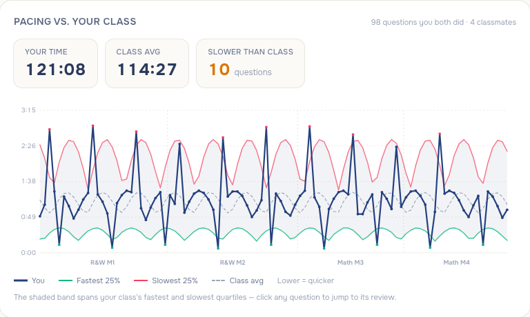
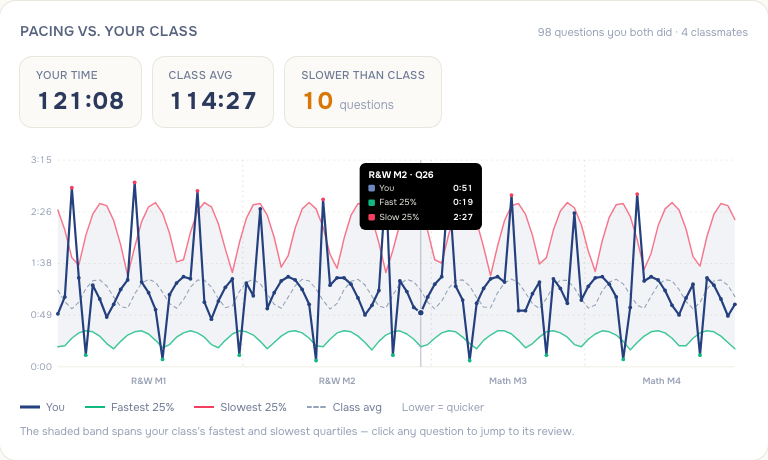

Before: a bar strip where height meant your time and color meant faster/slower — no sense of the class's range, and a green/yellow/red palette outside the Ivy voice. After: every question shows the class's fastest↔slowest quartile spread as a quiet band, the dashed class average, and your line in the domain accent on top — you can see exactly where you sit in the range on every question. Hovering shows the exact times; clicking a question jumps to its review card below. Dots tint only at outliers (emerald when you beat the fast group, rose when you trail the slow group).



Data note: the after-shots use a seeded 5-student QA cohort with synthetic per-question dwell profiles (hence the wave pattern) — real class data reads organically. The band requires ≥4 classmates; below that the chart shows your own pace with a caveat.